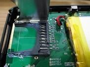
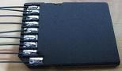
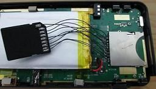
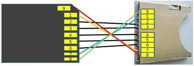
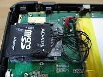
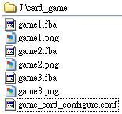
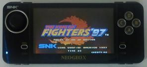
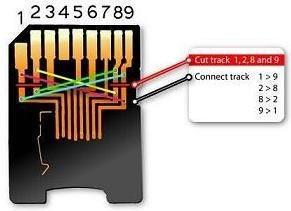

Steward
分享是一種喜悅、更是一種幸福
掌機 - Neo Geo X v370 - 改機玩其它遊戲
自從司徒知道SDCard資料是使用對調的方式(前後4Bits對調)之後，司徒便想嘗試使用軟體的方式破解，但是，司徒發現SNK送的SDCard遊戲(Ninjan Master's)，竟然無法使用SDCard讀卡機做寫入的動作，代表這一張SDCard並不是一般的SDCard，而是已經對調過的客製SDCard，但是大家也會有疑問，之後SNK如何做更新遊戲的動作呢？答案很簡單，其實只要透過掌機內部程式，即可做讀寫的動作，因為就掌機內部程式來看，雖然SDCard是使用硬體跳線的方式製作，但是，內部程式看到的卻是正常的SDCard，因此，就算使用者將SDCard的原始資料做位元交換並寫入SDCard，插入掌機後，其初始化過程也是會產生錯誤，因為硬體還是有問題，所以會導致無法正確讀取資料，因此，司徒真的相當佩服SNK的做法，修改硬體電路讓軟體無法破解，只能說這是一個相當好的設計，因此，要解這種問題，只能從硬體下手，所以司徒只好重新焊接一個SDCard轉換座，只要硬體線路改好，就可以使用一般MicroSD玩遊戲
首先把SDCard卡座拆掉

使用MicroSD轉SDCard卡座

接著將SDCard的Bit0~Bit3對調成Bit3~Bit0，其餘照接

司徒重新畫一張比較好看的圖

接著使用三秒膠把它固定住

以後只要使用MicroSD就可以運作
使用2GB MicroSD(FAT16、FAT32都可以運作)，並放入如下檔案

game_card_configure.conf檔案內容如下(*.jpg圖檔大小為209 x 428)
card_game_number=3 card_game_work_path=/mnt/mmc/card_game/
card_game_number：遊戲數量
card_game_work_path：遊戲路徑
開機後選擇SDCard遊戲並進入遊戲選單畫面
KOF97遊戲畫面

之後就可以使用MicroSD玩更多NeoGeo遊戲。
其實，有另外一種更安全的改機方式，那就是只要購買MicroSD轉SDCard卡套，然後拆開焊線跳線即可
